Più venduta
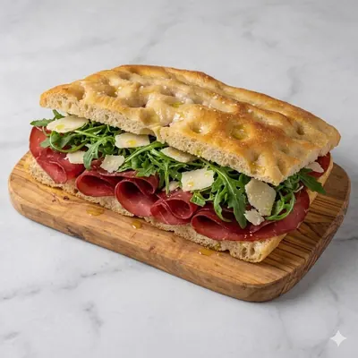
Bresaola, rucola e grana
Bresaola, rucola e scaglie di grana.
Salumeria · Gastronomia · Catering
Il banco di Gianluca in Viale Mellusi: taglieri per l'aperitivo, focacce farcite al momento, piatti del giorno e buffet per le tue feste. Da gustare qui, da portare via o da ricevere a casa.
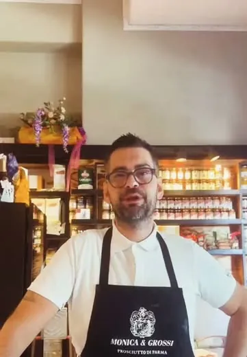
Gianluca D'Aronzoil tuo salumiere
Viale Mellusi 15, Benevento

Cosa trovi da noi

Salumi da affettare al momento, formaggi da assaggiare, mozzarella e ricotta arrivate stamattina.
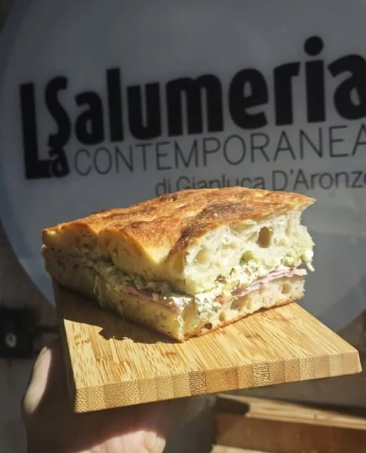
Anche su GlovoCroccanti fuori, soffici dentro, farciti al momento.
Ai tavolini, con un calice di vino campano.
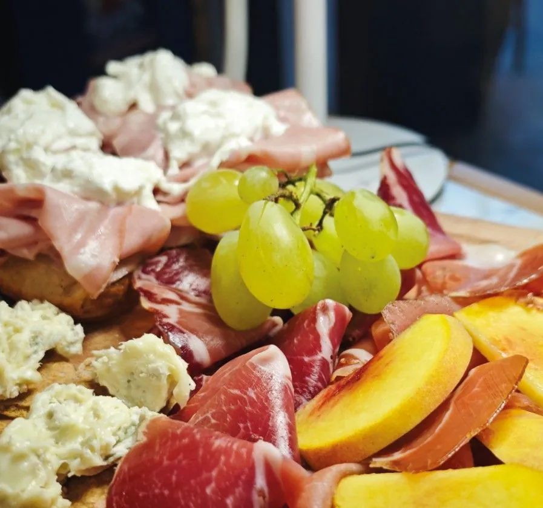
Lauree, compleanni, aperitivi in ufficio: dicci quanti siete, al resto pensiamo noi.
Dal laboratorio
Piatti del giorno, cucinati qui dentro.
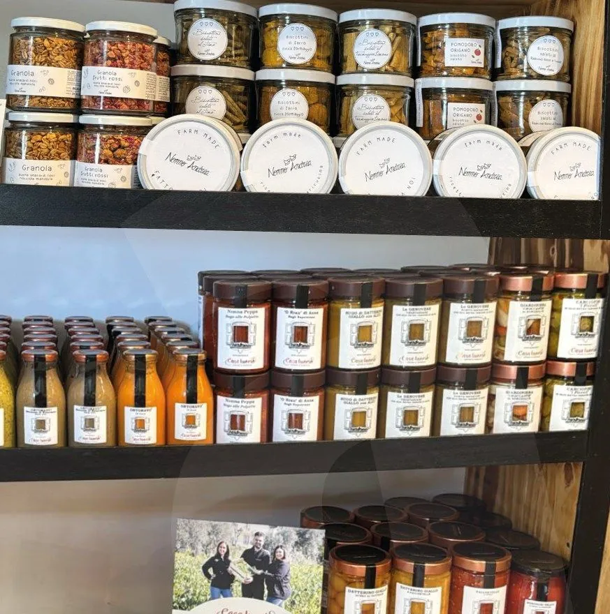
Dietro al banco
Gianluca sceglie uno a uno i prodotti del banco, e se gli chiedi di un formaggio ti racconta da dove viene, chi lo fa e con cosa abbinarlo. Lo vedi anche su Instagram, quando apre le casse dei nuovi arrivi. Qui la spesa si fa parlando.
Un assaggio prima di comprare non si nega a nessuno.
Freschi e a km 0Frutta e verdura di stagione da produttori del Sannio, mozzarella e ricotta di giornata.
Cucina di giornataUn primo, un secondo e i contorni, diversi ogni giorno.
Asporto e consegna a domicilioPassa a prendere il tuo ordine o fattelo portare a casa con Glovo.
Pranzo veloce, ma come si deve

Bresaola, rucola e scaglie di grana.
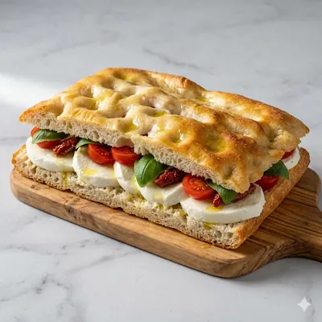
Pomodoro e mozzarella di bufala: semplice e fresca.

Capocollo e gorgonzola dolce, sapido e cremoso.
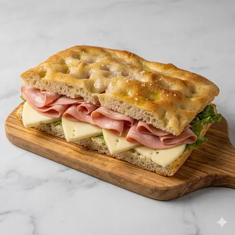
Il classico che mette tutti d'accordo.
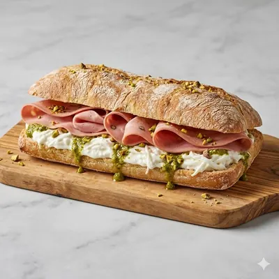
Mortadella, stracciatella e pesto di pistacchio.
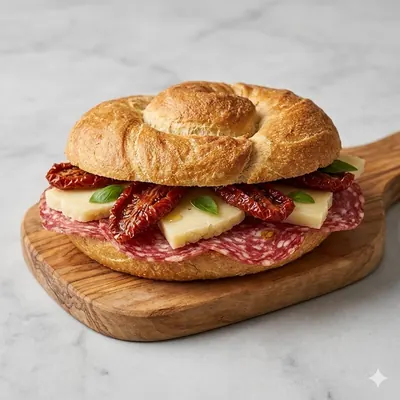
Salame Milano, caciocavallo e pomodori secchi.
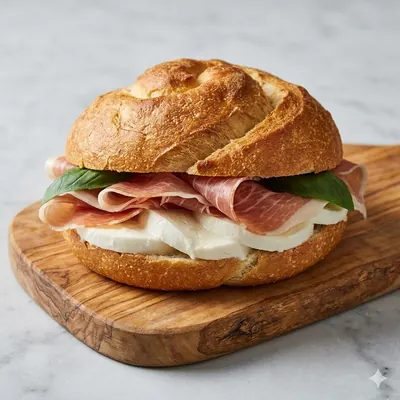
Prosciutto crudo e mozzarella di bufala.

Prosciutto cotto, provola e melanzane grigliate.
Foto illustrative.
Sul bancone in questi giorni
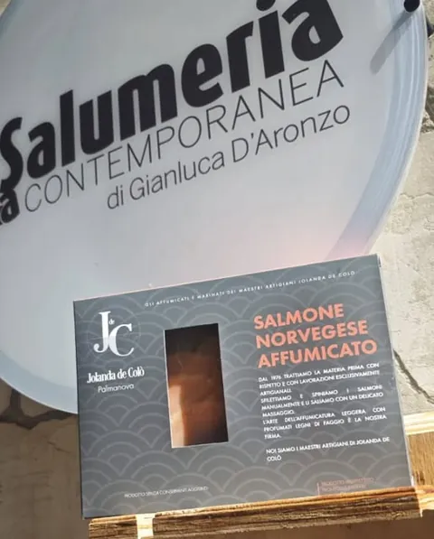
Norvegese, lavorato artigianalmente: delicato ed elegante.
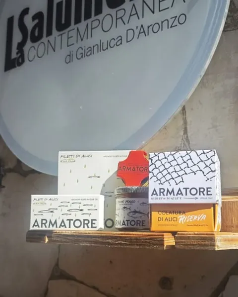
Dai filetti alla colatura di alici, per chi cerca la materia prima.
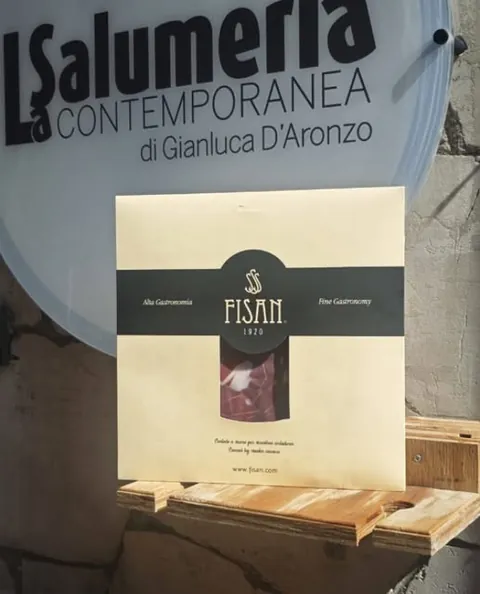
Quando la materia prima è eccellente, basta poco.

Le ultime forme arrivate: chiedi un assaggio al banco.
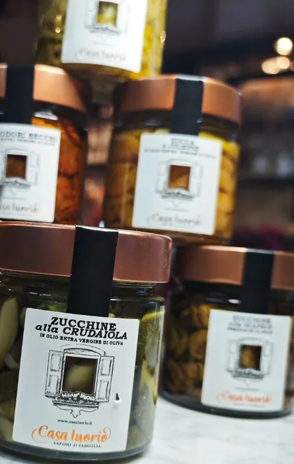
Zucchine alla crudaiola, peperoni, pomodori secchi e sughi pronti.

Zucchina, fiori di zucca e limone; sale con arancia, lavanda e rosmarino.
Dicono di noi
35 recensioni su Google
97% di clienti soddisfatti su Glovo
«Abbiamo mangiato una focaccia farcita super! Fresca e fragrante, ingredienti di primissima qualità.»
«Ci siamo stati più volte e ogni volta è una conferma. Un posto davvero speciale, con i tavoli per l'aperitivo.»
«Staff super disponibile, gentile e veloce. Abbiamo fatto un apericena e non siamo riusciti a finire tutto.»
Orari e indirizzo
Viale Mellusi 15
| Lunedì | 9:00 – 22:00 |
|---|---|
| Martedì | 9:00 – 16:00 |
| Mercoledì | 9:00 – 22:00 |
| Giovedì | 9:00 – 22:00 |
| Venerdì | 9:00 – 24:00 |
| Sabato | 9:00 – 24:00 |
| Domenica | Chiuso |
Dal nostro profilo
@la_salumeria_contemporanea · nuovi arrivi, taglieri e orari aggiornati.
Ti aspettiamo
Viale Mellusi 15